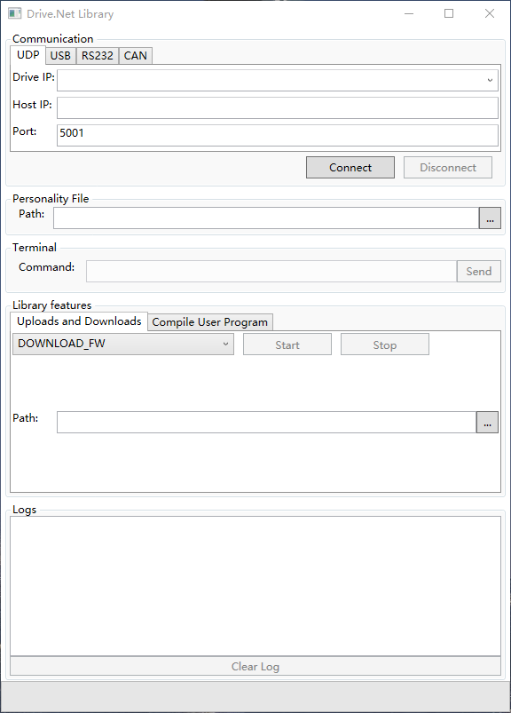
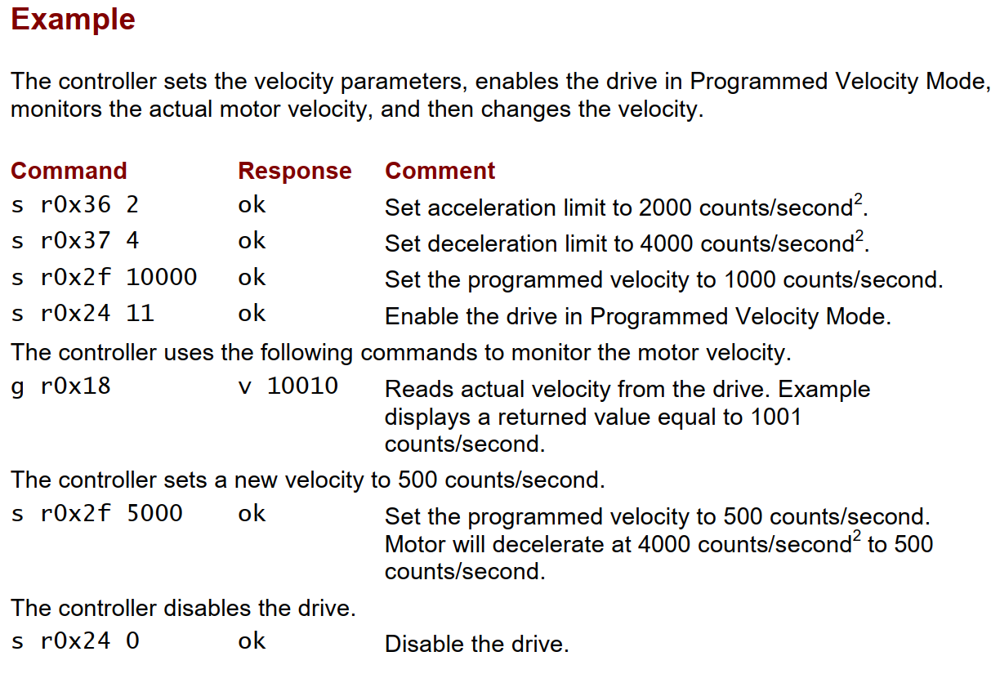

机器人关节模组上位机API调研
1. 前言
1.1 控制系统架构
在工业自动化系统中，上位机（Host Computer）、控制器（Controller）、驱动器（Driver） 是控制架构三个层级分明、功能互补的核心组件。以下是它们的核心异同及协作关系分析：
| 核心功能 | 典型设备 | 响应时间 | |
|---|---|---|---|
| 上位机 | 决策与监控层 | 工业PC、触摸屏、服务器 | 秒级 |
| 控制器 | 实时控制层 | PLC、运动控制卡、嵌入式控制器 | 毫秒、微秒级 |
| 驱动器 | 功率执行层 | 伺服驱动器、变频器、步进驱动器 | 微秒级 |
#
2. 伺服产品现状
2.1 elmo
elmo提供.NET的dll库和demo，支持C#语言（应该也支持VB）。
通讯方式：RS232，USB，UDP, CANopen（没有Enthercat）
功能：
编译下载用户程序（结合运行离线程序功能EMC语言）
上传下载驱动器参数
采集数据

只能读写配置等功能，不能进行运动控制，可以结合脱机程序功能下载脚本。
2.2 Copley
没有提供API，但提供自定义ASCII接口协议（“speak when spoken to” 被呼叫时说话），通过RS-232串口连接，波特率9600-115200
功能：
读写驱动器参数
控制轨迹生成
读写CVM（多轴共享）寄存器

可以进行简单的运动控制，但无法实现enthercat等高实时性总线功能。
2.3 Kollmorgen
完全不支持上位机API：
使用PLC主站控制
使用KAS软件编写程序下载后脱机执行
2.4 ProCorn
需要安装Notime或Notime++的runtime，提供API，支持C#和C++语言。
3. 机器人关节模组产品现状
3.1 众擎
FDCAN协议，没有demo。
3.2 因克斯
支持CAN和Enthercat两种总线。
提供CAN总线API（给嵌入式使用）
例如：
提供enthercat总线demo，但并不是402协议，使用开源项目SOEM
3.3 灵足时代
CAN，提供API
3.4 达妙科技
提供CAN总线API，上位机demo
3.5 零差云控
enthercat，402协议，无demo。
3.6 Motorevo
enthercat，402协议，无demo。
3.7 泰科
enthercat，402协议，提供xml，无demo。
4. 总结
| 厂家 | 总线协议 | 编程语言 | 备注 | 上位机控制方式 |
|---|---|---|---|---|
| Elmo | RS232，USB，UDP, CANopen | C#(VB) | 没有运动控制，运动控制需要把脚本下载到驱动器 | Ecat软主站 |
| Copley | RS232 | 仅提供协议，没有库 | 可以通过上位机进行非实时的运动控制 | 实时Ecat软主站非实时通过串口 |
| Kollmorgen | 不支持 | 不支持 | 使用KAS软件编写程序下载 | Ecat软主站 |
| ProCorn | EntherCAT | C#，C++ | 支持运动控制API，有完整API库，但要安装实时系统 | 厂家提供API，但要基于Runtime |
| 众擎 | FDCAN | 仅提供协议，没有库 | CAN主站 | |
| 因克斯 | EntherCAT（非402） | C/C++ | 提供demo，EntherCAT基于开源主站SOEM，不支持402协议 | CAN主站Ecat软主站 |
| 灵足时代 | CAN | C++ | 提供demo | CAN主站 |
| 达妙科技 | CAN | C++ | 提供协议和开源上位机，生态好 | CAN主站 |
| 零差云控 | EntherCAT | 仅提供协议，没有库 | 手册使用TwinCAT | Ecat软主站 |
| Motorevo | EntherCAT | 提供协议，没有库 | Ecat软主站 | |
| 泰科 | EntherCAT | 提供xml，没有库 | Ecat软主站 |
目前模组大多使用CAN总线或EntherCAT。
CAN总线实时性不如EntherCAT，但对上位机实时性要求不高，协议实现较简单，适合要求较低场景。
EntherCAT主站实现困难主要是Igh和SOEM两个开源项目，Igh采用GPL开源协议，SOEM采用LGPL开源协议，商用不开源有风险。
汇川有基于Igh的EntherCAT软主站，重写了99%的代码，没有开源许可证风险。